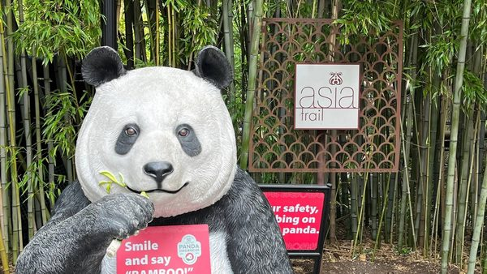

Asia Trail, Smithsonian's National Zoo
Smithsonian's National Zoo · Photo Tour #7

Photo Tours is Back with Tour #7, Asia Trail-Smithsonian National Zoo. Opened back in October of 2006 as part of the zoo’s 10 year renovation plan, it takes you to the dense forests of the world‘s largest continent and containing some of the world’s gems of the forest.
it is the very first area for people to visit at the zoo and honestly the most popular, when you enter the trail you first come across two large elevated mountainous forest with a couple of waterfalls and it is the home of the Sloth Bears,
you continue down the trail to meet the canopy of the temperate forest and come across the Clouded Leopard which over 70 of them were born in the care of the Smithsonian,
next to the leopards is two enclosures for another cat which is the Fishing Cat to be exact which also comes with an underwater viewing since these cats do like to spend their time in water like Tigers and Jaguars,
next is the mountain forest for the Red Pandas ( they were off display on my visit ) and a stream forest for Asian Small-Clawed Otters and then the main event, The Giant Pandas, which has 3 large enclosures and indoor homes which D.C.
it has been carrying for giant pandas since 1972 and in the past 50 years and obtained 6 Pandas including 2 new pandas that joined in late 2024 and 4 were born in the zoo’s history and to this day, it will always be a very popular attraction.
Louie posted this on Facebook — open the original post →